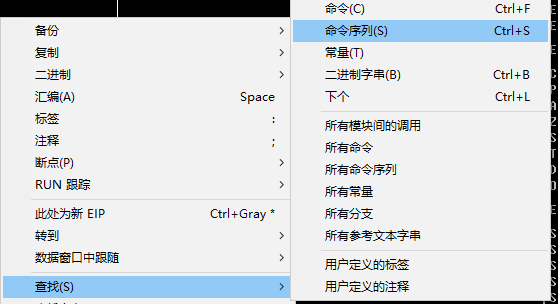
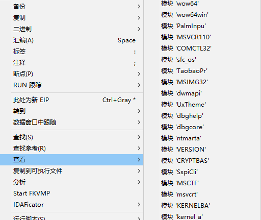
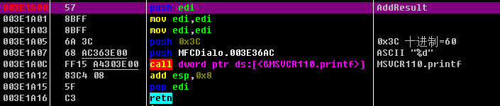
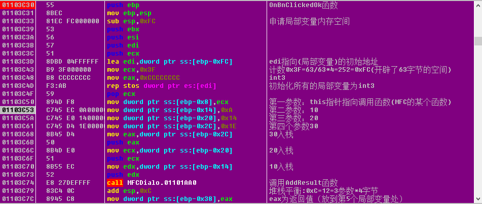
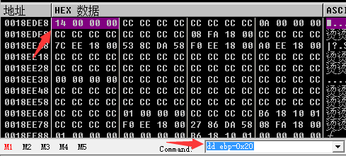
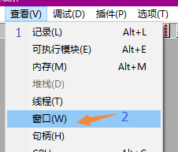
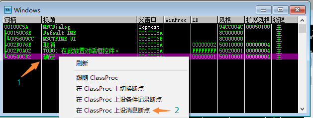
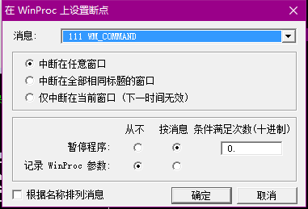

OD使用
Ollydbg使用技巧
初识反汇编代码
使用vs2012创建vc++MFC工程，书写代码如下：
int AddResult(int x,int y,int z)
{
__asm{
mov edi,edi
mov edi,edi
}
int result=x+y+z;
return result;
}
void CMFCDialogDlg::OnBnClickedOk()
{
// TODO: 在此添加控件通知处理程序代码
int x=10,y=20,z=30;
int re=AddResult(x,y,z);
printf("%d",re);
//CDialogEx::OnOK();
}
使用OD加载应用程序.exe文件
首先我们使用OD强大的功能分析代码(快捷键Ctrl+A)
右键->查找->命令序列(快捷键Ctrl+S)输入内容：
mov edi,edi
mov edi,edi
 有时候你会找不到,原因在于没有选中我们自己的代码模块(右键->查看)如下图所示，我们选中上述代码所在的模块(此例为:MFCDialo) 
反汇编结果
Release版本：

AddResult的结果
60=0x3c直接被编译到了OnBnClickedOk函数的内部，并且以立即数的形势push进栈给printf调用。
Debug版本：


sub esp,0xFC; 申请局部变量内存空间
......省略
lea edi,dword ptr ss:[ebp-0xFC]; edi指向(局部变量)的初始地址
mov ecx,0x3F; 计数0x3F=63/63*4=252=0xFC(开辟了63字节的空间)
mov eax,0xCCCCCCCC ; int3
rep stos dword ptr es:[edi] ; 初始化所有的局部变量为int3
pop ecx
mov dword ptr ss:[ebp-0x8],ecx ; 第一参数：this指针指向调用函数(MFC的某个函数)
32位汇编中的段寄存器基本无用(使用通用寄存器寻址，不需要偏移)
ES(External Segment)
DS(Data Segment)
CS(Code Segment)
使用DD命令在command窗口直接查看内存地址处的值： 
dd ebp-0x20 //而不需要使用
dd ss:[ebp-0x20]
VC++编辑器里面的内联汇编指令
_asm和__asm没有本质的区别。_asm是旧标准(兼容)，__asm是新的标准。
下断点
窗口消息断点
- 打开工具栏->查看->窗口 
- 选择要监听的控件->右键->在ClassPro上设置消息断点 
- WM_COMMAND消息(111)、WM_LBUTTONUP消息(202) 
命令行断点
bp send //表示下 send消息断点
bp WS2_32.Send //现在的socket基本上都是使
bc //清除断点
HW //hardware write硬件写入
HR
? eax //显示表达式的值